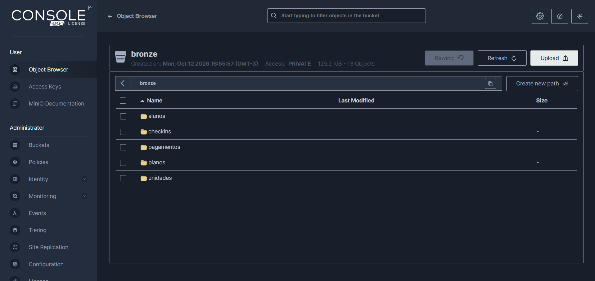
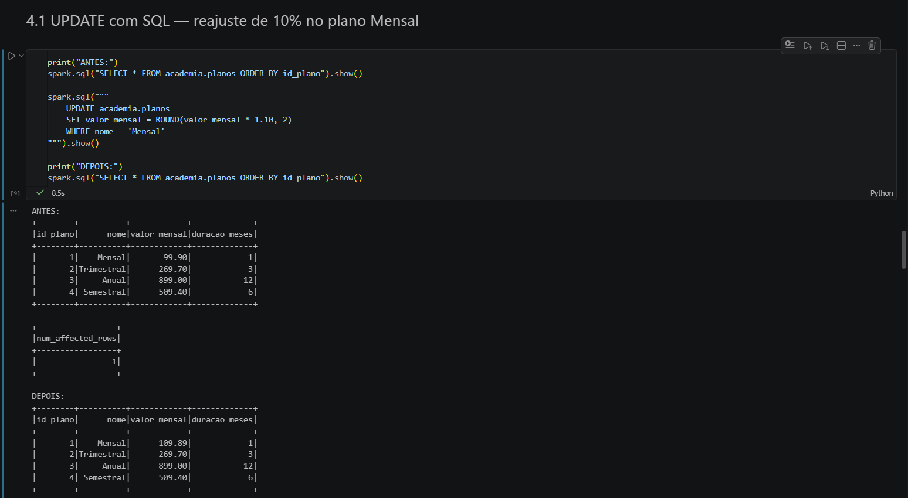
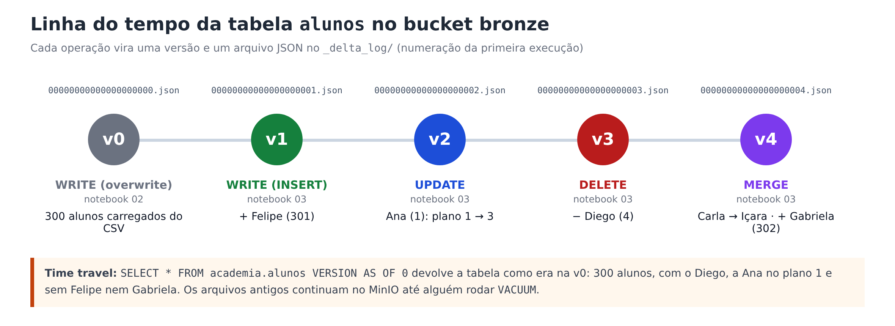
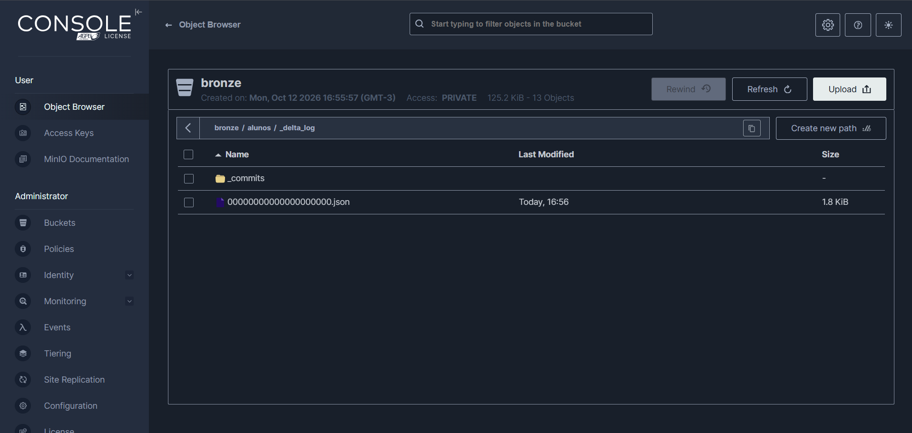
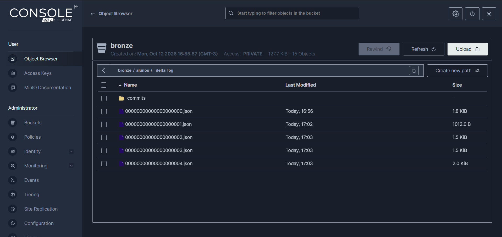

Bronze: Delta Lake e DML¶
Esta etapa cobre os itens 2 e 3 do enunciado: transformar os CSVs da landing-zone em tabelas Delta Lake no
bucket bronze (notebook 02) e reproduzir sobre elas os INSERT, UPDATE e DELETE do Trabalho 1 (notebook 03).
O Spark conversando com o MinIO¶
O Spark não sabe falar com o MinIO sozinho. Ele usa o conector S3A (pacote hadoop-aws), o mesmo usado para
o Amazon S3. Como o MinIO imita a API do S3, basta apontar o endereço para localhost:9020. A partir daí, os
caminhos das tabelas passam a começar com s3a://.
spark = (
SparkSession.builder
.config("spark.jars.packages", "io.delta:delta-spark_2.12:3.2.0,org.apache.hadoop:hadoop-aws:3.3.4")
.config("spark.sql.extensions", "io.delta.sql.DeltaSparkSessionExtension")
.config("spark.sql.catalog.spark_catalog", "org.apache.spark.sql.delta.catalog.DeltaCatalog")
.config("spark.hadoop.fs.s3a.endpoint", MINIO_ENDPOINT) # http://localhost:9020
.config("spark.hadoop.fs.s3a.access.key", MINIO_ACCESS_KEY)
.config("spark.hadoop.fs.s3a.secret.key", MINIO_SECRET_KEY)
.config("spark.hadoop.fs.s3a.path.style.access", "true") # MinIO usa caminho, não subdomínio
.config("spark.hadoop.fs.s3a.connection.ssl.enabled", "false") # laboratório local, sem HTTPS
.getOrCreate()
)
Por que hadoop-aws 3.3.4?
O PySpark 3.5.3 vem com as bibliotecas do Hadoop 3.3.4. O hadoop-aws precisa ser exatamente da mesma versão;
outra versão causa erros como NoSuchMethodError ou ClassNotFoundException.
Notebook 02 — CSV → Delta Lake¶
Para cada tabela, o Spark lê o CSV com um esquema declarado e grava em Delta no bucket bronze:
SCHEMAS = {
"unidades": "id_unidade INT, nome STRING, cidade STRING, bairro STRING, data_inauguracao DATE",
"planos": "id_plano INT, nome STRING, valor_mensal DECIMAL(10,2), duracao_meses INT",
"alunos": "id_aluno INT, nome STRING, email STRING, cidade STRING, id_plano INT, data_matricula DATE, ativo BOOLEAN",
"checkins": "id_checkin INT, id_aluno INT, id_unidade INT, data_hora TIMESTAMP",
"pagamentos": "id_pagamento INT, id_aluno INT, competencia DATE, data_pagamento DATE, valor DECIMAL(10,2), "
"forma_pagamento STRING, status STRING",
}
df = (spark.read.option("header", "true").option("mode", "FAILFAST")
.schema(SCHEMAS[tabela]).csv(f"s3a://landing-zone/{tabela}.csv"))
df.write.format("delta").mode("overwrite").save(f"s3a://bronze/{tabela}")
Duas escolhas importantes:
- Esquema declarado em vez de
inferSchema. Se o Spark adivinhasse os tipos,valor_mensalvirariadouble(com problemas de arredondamento em dinheiro) e as datas poderiam virar texto. Declarando, os tipos voltam a ser os do SQL Server. mode = FAILFAST. Se alguma linha vier fora do formato, a leitura falha na hora, em vez de transformar o valor em nulo silenciosamente. É melhor descobrir o problema no bronze do que num relatório.
| Tipo no SQL Server | No CSV | No Delta (Spark) |
|---|---|---|
INT |
301 |
INT |
DECIMAL(10,2) |
99.90 |
DECIMAL(10,2) |
DATE |
2024-06-10 |
DATE |
DATETIME2(0) |
2024-06-03 07:15:00 |
TIMESTAMP |
BIT |
True |
BOOLEAN |
NULL |
(campo vazio) | NULL |
Resultado real no console do MinIO depois do notebook 02: uma pasta por tabela no bucket bronze.

Cada tabela vira uma pasta no bucket, com os dados em Parquet e o log de transações em _delta_log/
(veja a imagem em SQL Server → Landing Zone).
Notebook 03 — DML no bronze¶
Primeiro, as pastas do bucket são registradas como tabelas no Spark SQL, para podermos usar SQL comum:
spark.sql("CREATE DATABASE IF NOT EXISTS academia")
for t in ["unidades", "planos", "alunos", "checkins", "pagamentos"]:
spark.sql(f"CREATE TABLE IF NOT EXISTS academia.{t} USING delta LOCATION 's3a://bronze/{t}'")
O LOCATION faz delas tabelas não gerenciadas (externas). O porquê disso está em
Gerenciadas × não gerenciadas.
Em seguida, os mesmos DML do Trabalho 1, agora sobre dados que estão no MinIO:
INSERT¶
UPDATE¶
| id_plano | nome | valor_mensal antes | valor_mensal depois |
|---|---|---|---|
| 1 | Mensal | 99.90 | 109.89 |
| 2 | Trimestral | 269.70 | 269.70 |
| 3 | Anual | 899.00 | 899.00 |
| 4 | Semestral | 509.40 | 509.40 |
Ver a execução real no notebook 03

DELETE¶
O aluno Diego (id 4) cancelou. Agora que existem pagamentos, o DELETE envolve três tabelas:
for tabela in ["checkins", "pagamentos", "alunos"]:
spark.sql(f"DELETE FROM academia.{tabela} WHERE id_aluno = 4")
| Tabela | Linhas do Diego antes | Depois |
|---|---|---|
checkins |
2 | 0 |
pagamentos |
5 | 0 |
alunos |
1 | 0 |
O Delta não protege as chaves estrangeiras
No SQL Server, apagar o Diego antes dos pagamentos dele daria erro de FK. No Delta Lake, daria certo e deixaria 5 pagamentos "órfãos". Por isso, no bronze, a ordem certa é responsabilidade de quem escreve o pipeline.
MERGE (bônus)¶
MERGE INTO academia.alunos AS destino
USING lote_alunos AS origem
ON destino.id_aluno = origem.id_aluno
WHEN MATCHED THEN UPDATE SET * -- Carla (3) muda para Içara
WHEN NOT MATCHED THEN INSERT * -- Gabriela (302) é inserida
HISTORY e TIME TRAVEL¶

No MinIO dá para ver esse "diário" de verdade, na pasta bronze/alunos/_delta_log/:
Só a versão 0, criada pelo notebook 02 ao gravar os 300 alunos.

Uma versão nova (um arquivo .json) para cada operação: INSERT, UPDATE, DELETE e MERGE.

E a pasta _commits?
É uma pasta de trabalho interna do Delta Lake 3.x, usada durante a gravação dos commits. O histórico da tabela
está nos arquivos .json numerados.
spark.sql("DESCRIBE HISTORY academia.alunos").show()
# a versão de antes dos DML é guardada no começo do notebook
spark.sql(f"SELECT * FROM academia.alunos VERSION AS OF {versao_inicial['alunos']}").show()
O notebook guarda a versão de cada tabela antes dos DML, em vez de escrever um número fixo. Assim o time travel
continua certo mesmo se o notebook 02 for rodado mais de uma vez (cada overwrite cria uma versão nova).
Verificações automáticas¶
O notebook 03 termina conferindo os resultados com assert. Se algum falhar, a execução para e mostra qual:
| Verificação | Esperado |
|---|---|
| valor do plano Mensal | 109.89 |
| plano da Ana (1) | 3 (Anual) |
| cidade da Carla (3) | Içara |
| Felipe (301) e Gabriela (302) | existem |
linhas do Diego (4) em alunos, checkins e pagamentos |
0 |
| total de alunos | 301 (300 + 2 inseridos − 1 removido) |
| time travel para a versão inicial | 300 alunos, com o Diego |